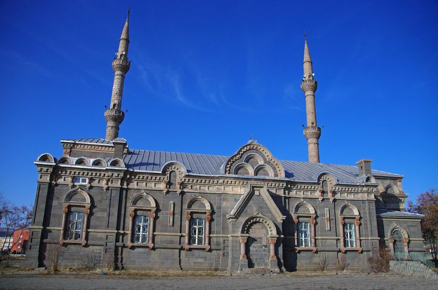

TURİZM HARİKASI KARS'TA GEZİLECEK YERLER
Doğu Anadolu Bölgesi’nin popüler turizm kentlerinden Kars, 1768 metrelik rakımı ile bu alanda Türkiye’nin en ileri gelen şehirlerinden de biri. Baltık mimarisinden kayak merkezine, Sarıkamış şehitlerinden tarihi ibadethane yapılarına kadar zengin bir mirasa sahip olan Kars gezilecek yerler noktasında da bitmek bilmeyen noktalara sahip. Günümüzde Ankara – Kars arası Doğu Ekspresi seferleri de kentin ulaşılabilirliğini artırmış ve popülerliğine katkı sağlamıştır.
Katerina Köşkü
Kars’ın Sarıkamış ilçesinde yer alan Katherina Köşkü, on dokuzuncu yüzyılın sonlarına doğru yapılmış bir köşk olarak karşımıza çıkıyor. 1877 – 1878 yılları arasında tarihe 93 Harbi olarak geçen savaş sonucunda bölgenin Rusya tarafından işgal edilmesi, Kars’ta 40 yıllık bir Rus hâkimiyetini başlatmıştır. Bu dönemde işgalin bir parçası olarak inşa edilen pek çok yapı bugün mimari bir zenginlik. Bunlardan biri olarak öne çıkan Katherina Köşkü ya da diğer adıyla Av Köşkü, Baltık mimari tarzında inşa ediliyor.
Rusya, Baltık Denizi tarafından uygulanan mimari anlayışını böylece Kars’a da getirmiştir. Köşkün bir kitabesi olmaması nedeniyle mimarı, hangi amaçla inşa edildiği gibi bilgilere kesin olarak ulaşılamıyor. Av köşkü ve ana köşk olarak ikiye ayrılan Katherina Köşkü, beton kolonları sayesinde ayakta duruyor. Yaygın bilinen bir yanlış da II. Çar Nikolay’ın eşi Katherina için köşkü yaptırdığıdır. Çarın eşinin adı değil Katherina değil, Aleksandra’dır ve köşkü eşi için yaptırdığı doğru değildir.
Kars Kalesi
Kars’taki Ani Harabeleri ile beraber antik sit alanı içerisinde yer alan Kars Kalesi’nin ilk defa Urartular tarafından inşa edildiği düşünülüyor. Ardından Saltukluların, Selçukluların ve Osmanlı Devleti’nin onarımından geçtiği düşünülen kale, kimi kaynaklara göre 1150’lilerde Selçuklular tarafından inşa edilmiş bir yapı olarak karşımıza çıkıyor. Kalenin kitabesine göre yapı 1152 yılında Anadolu Selçuklu Sultanı Meliki İzzeddin Keykavus’un emri ile yaptırılıyor.
Çıldır Gölü
Çıldır Gölü Ardahan ve Kars illerinin sınırları içerisinde yer alıyor. Doğu Anadolu’nun en büyük tatlı suyu ve en büyük ikinci gölü olan Çıldır Gölü’nün en derin noktası 42 metre. Doğal bir set gölü olan Çıldır Gölü’nün etrafında dört mevsim yapılabilen balıkçılık da bölge halkı için geçim kaynağı olmuştur. Kış döneminde atlı kızaklar ile de gezilebilen göl, Türkiye’de tümüyle donan tek göl olarak da kayıtlara geçiyor.
Meşhur Çıldır Göl Festivali ve Aşık Şenliği de bölge halkının yanı sıra Gürcistan, Azerbaycan, Kırgızistan, Türkmenistan’dan gelen Kafkas halklarını ağırlıyor. Kars ili ve Çıldır Gölü arasındaki mesafe ise yaklaşık 65 kilometre. Ardahan’a da 60 kilometre uzaklıkta bulunan Çıldır Gölü’ne her iki il merkezinin otogarından ulaşabilirsiniz.
Homoros Manastırı
Ani Harabelerinin 15 km kuzeydoğusunda bulunan Horomos Manastırı, Ani Krallığı’nın en önemli dinî ve kültürel merkezlerinden olması ile de dikkat çekiyor. Nehir kenarındaki zorlu bir yoldan geçilerek ulaşılan Horomos Manastırı, onuncu yüzyılda inşa ediliyor. Kurulduğunda kervan yolu üzerinde bulunan manastır, bir efsaneye göre yoksulları gördüğünde onlara giysilerini verecek kadar yufka yürekli Hovhannes tarafından yaptırılıyor.
Sarıkamış Kayak Merkezi
Günümüzde Türkiye’de kış turizmi denildiğinde akla ilk gelen lokasyonlardan biri Sarıkamış Kayak Merkezi. Kars’a 54 kilometre mesafede yer alan bölgede çıktığınız tepeden görebileceğiniz manzaralar mı dersiniz doyasıya kayak mı… Kristal kar yapısı ile görsellerde dahi direkt dikkat çeken Sarıkamış Kayak Merkezi, Alplerden sonra kristal karın yağdığı tek yer olarak da biliniyor. Toplamda 9 pistin bulunduğu Sarıkamış Kayak Merkezi, yarıyıl tatilinde de ailelerin çokça tercih ettiği kış tatillerinden biri oluyor.
Fethiye Cami

On dokuzuncu yüzyılda Ruslarca Baltık mimarisi şeklinde kilise olarak inşa edilen yapı, Cumhuriyet’in erken dönemlerinde kapalı spor salonu olarak kullanılmış, 1985’te ise camiye çevrilmiştir. Kesme taştan dikdörtgen formunda yapılan Fethiye Cami’nin batısındaki girişinin üzerine de üç pencereli bir çatı katı eklenmiştir.